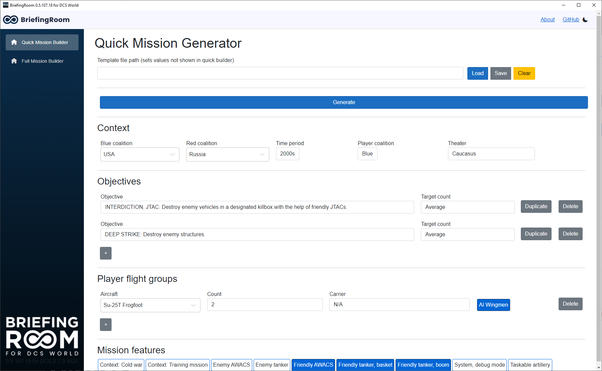
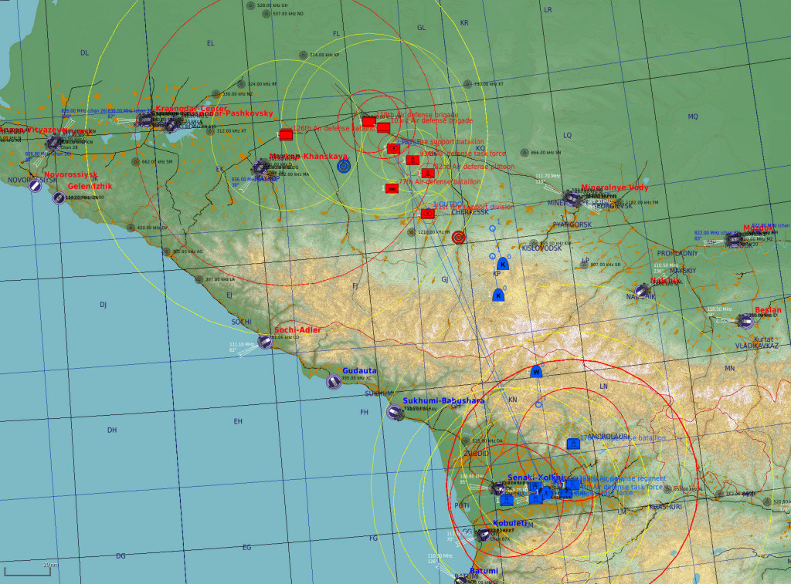

BriefingRoom for DCS World
BriefingRoom for DCS World is the much more advanced successor to my own Headquarters for DCS World (HQ4DCS) application, and a massively improved version of DCS World's own fast mission generator. BriefingRoom allows you to create complete scenarios in just a few clicks. Missions generated with BriefingRoom tend to be rather "player-centric". Their purpose is not to simulate a real war theater, like Falcon 4's dynamic campaign, but to provide the player(s) with interesting objectives and challenges. This approach is a perfect fit for DCS World's limited number of units and very capable scripting engine.
While BriefingRoom is designed to be easy to use and to allow the creation of missions in mere seconds, it is also heavily moddable and will give many options to power users ready to tackle with its most advanced features.
BriefingRoom is free and open source and will always remain so, but if you want to support its development, you can make a one-time donation when downloading from Itch.io, or a monthly donation using the PayPal link you'll find here.
- Initial version by Ambroise Garel, now developed and maintained by John Harvey
- Source code, changelogs and additional information are available on the repository.
- Found a bug? Have a suggestion? Post it in the issue tracker.
- Join the Discord!
|  |  |
 |
{kind=link}
{kind=link}
Features summary
- Can generate any kind of single-player or multiplayer mission, from deep strikes behind a hostile superpower's cutting-edge integrated air defense network to photo reconnaissance flights over a terrorist training camp.
- Choose from a large variety of mission types, from combat air patrols to bomber interception, target designation for artillery strikes, photo reconnaissance, bomb damage assessment and many others, or create your own by picking target types, players tasking, and various objective and mission features.
- Extremely easy to use: generate missions in seconds without any technical knowledge, then export them to a DCS World .MIZ file in just a few clicks.
- Automatically generates proper friendly/enemy units according to countries and time period, but also able to create "what if" scenarios (2010s USAF vs 1940s Luftwaffe) and freely choose player aircraft in any country/time period.
- Generated mission can include custom scripts for various effects (advanced SAM AI, JTAC smoke and laser designation, artillery strikes...)
- Save mission templates to small .ini files and share them with your friends.
- Easily moddable to add more countries, units and scenarios
- Available as both a graphical user interface for ease of use and as a command-line tool for batch mission generation
- Customize enemy SAM and air-to-air opposition for any mission difficulty.
- No units spawned through runtime scripting. All units are added to the mission itself, so they can be edited with DCS World's mission editor for further customization.
- Please read the user's manual and the modder's manual for more information
- The development roadmap and a list of features planned for future versions can be found here: trello.com/b/iGsqgbTu/briefingroom-project-tracker
Downloads
Changelogs for previous versions can be found on the GitHub repository.